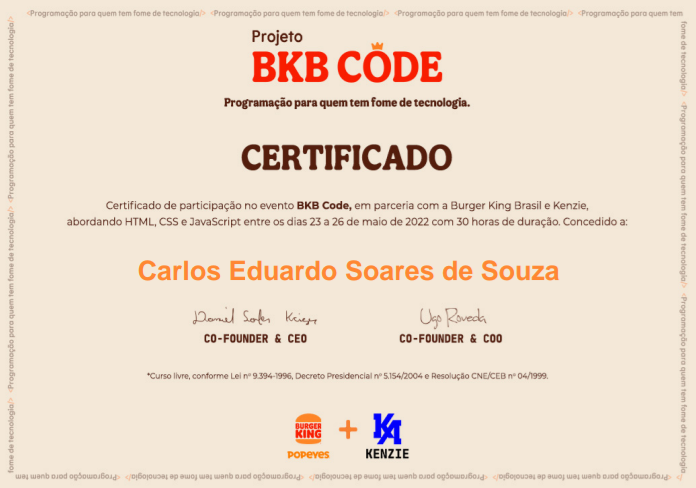
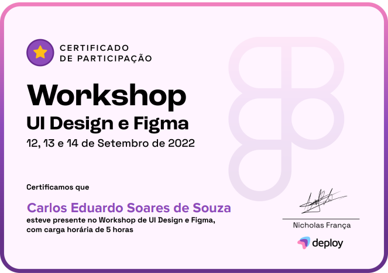
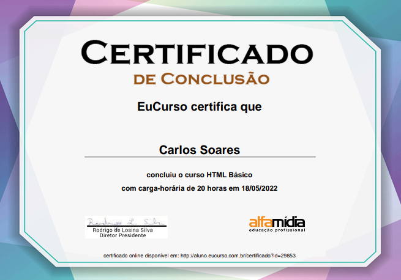

Quem sou eu:
Meu nome é Carlos Eduardo Soares de Souza,tenho 19 anos,moro em Juiz de Fora/MG.
Sou estudante de Farmácia e Técnico em Enfermagem e durante a pandemia comecei a me interessar por programação.
Em 2022 durante um pausa que tive da minha faculdade comecei a estudar HTML e CSS e agora estou dando meus primeiros passos no estudo de JavaScript.
Me considero um iniciante Front-End.
Aprendizado
A minha base e meu aprendizado de HTML5 e CSS3 foi construida atraves do meus estudos no site FreeCodeCamp, no canal do Profesor Guanabara no Youtube e de eventos online que participei.
Certificados
-

Certificado de participação no evento online da Kenzie e do BK,onde criamos um protótipo de um tokem do Bk
-

Certificado de participação no evento sobre UI Designer e Figma
-

Certificado de conclusão do curso básico de HTML do Eu curso
Portifólio Educacional
Esees são projetos feitos durante cursos e eventos de forma guiada ou espelhada!
-
Projeto BK
-
Projeto Mundo Invertido
-
Site-Android
-
Projeto SlideShow


Portifólio Autoral
Projetos desenvolvidos por mim mesmo com intuito de colocar todo o meu aprendizado em prática
-
Projeto Rocket Coffe

Projeto simples de um cardápio para um café que mais a frente tambem poderá dar o preço final das contas
(Em desenvolvimento) -
Projeto Farma Tec
Projeto que tem como intuito ser um programa para farmácias e drogarias onde se coloca os sintomas dos pacientes e atraves disso se tem uma indicação farmacêutica
(Em desenvolvimento) -
Projeto Hospital Santos Dumont
Projeto que visa criar um sistema para um hospital onde os médicos,enfermeiras e técnicos de enfermagem posssa usufruir de uma maneira mais atual e tecnológica a fim de oferecer um maior e melhor cuidado aos pacientes
(Em desenvolvimento)